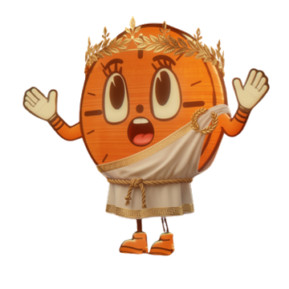

study desk
The next question is waiting.
Ophthalmology · Cornea bank · question 18. The vessel is 42% full: answers, repeats included; daily target 100; local-midnight reset.

subjects
study desk
Ophthalmology · Cornea bank · question 18. The vessel is 42% full: answers, repeats included; daily target 100; local-midnight reset.

subjects